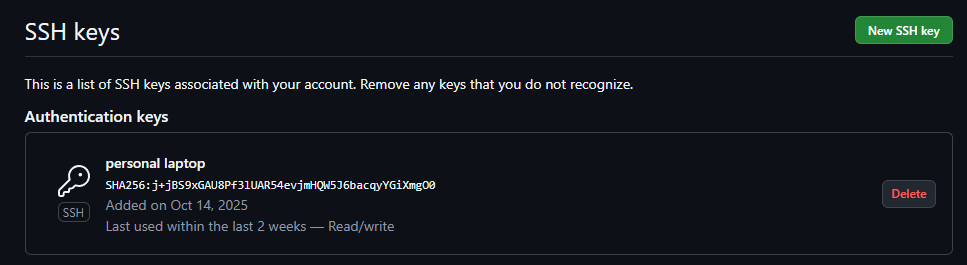
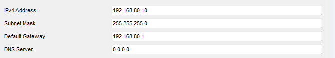
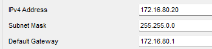

Содержание отчёта
1. Создание и настройка SSH-ключей
Создана пара SSH-ключей (id_ed25519 и id_ed25519.pub), публичный ключ добавлен в профиль GitHub для безопасного подключения.
2. Работа с репозиторием
Создан репозиторий KT_1ITD_TttyanAV, настроен доступ по SSH и выполнено клонирование.
Рис. 1. Репозиторий KT_1ITD_TttyanAV на GitHub

Рис. 2. Успешная проверка SSH-аутентификации

Рис. 3. Клонирование репозитория на локальный компьютер
3. Топология сети
На схеме изображена созданная топология сети, включающая маршрутизатор TttyanAV,
коммутаторы и конечные устройства Host_1, Host_2, Host_3.
Каждое устройство имеет индивидуальный IP-адрес, в которых третий октет соответствует моему
порядковому номеру — 80.
Рис. 4. Топология сети в Cisco Packet Tracer
Соединения выполнены по схеме “звезда” с использованием коммутатора. Маршрутизатор обеспечивает
маршрутизацию между двумя подсетями 192.168.80.0/24 и 172.16.80.0/16.
| Устройство | Интерфейс | IP-адрес | Маска подсети |
|---|---|---|---|
| Router TttyanAV | FastEthernet0/0 | 192.168.80.1 | 255.255.255.0 |
| Router TttyanAV | FastEthernet0/1 | 172.16.80.1 | 255.255.0.0 |
| Host_1 | — | 192.168.80.10 | 255.255.255.0 |
| Host_3 | — | 172.16.80.20 | 255.255.0.0 |
3.1 Настройка маршрутизатора TttyanAV
На маршрутизаторе изменено имя (hostname) на TttyanAV и настроены интерфейсы для двух сетей:
- FastEthernet0/0 —
192.168.80.1 / 255.255.255.0 - FastEthernet0/1 —
172.16.80.1 / 255.255.0.0
Команды, использованные для настройки маршрутизатора:
enable
configure terminal
hostname TttyanAV
interface fa0/0
ip address 192.168.80.1 255.255.255.0
no shutdown
exit
interface fa0/1
ip address 172.16.80.1 255.255.0.0
no shutdown
exit
end
write
Проверка команд show ip interface brief и show running-config показала, что интерфейсы активны:
Рис. 5. Проверка конфигурации маршрутизатора TttyanAV
3.2 Настройка IP-адресов на хостах
На конечных устройствах Host_1 и Host_3 были вручную заданы IP-адреса, маски подсетей и шлюзы по таблице:
| Устройство | IP-адрес | Маска подсети | Шлюз |
|---|---|---|---|
| Host_1 | 192.168.80.10 |
255.255.255.0 |
192.168.80.1 |
| Host_3 | 172.16.80.20 |
255.255.0.0 |
172.16.80.1 |
Конфигурация выполнялась во вкладке Desktop → IP Configuration. Скриншоты приведены ниже:
Рис. 6. Настройка IP-адреса на Host_1
Рис. 7. Настройка IP-адреса на Host_3
3.3 Проверка связности сети
Для проверки работы маршрутизации выполнена команда ping между узлами сети:
Рис. 8. Проверка связности между подсетями
3.4 Конфигурация маршрутизатора
Ниже приведён очищенный фрагмент конфигурации маршрутизатора TttyanAV,
полученный с помощью команды show running-config:
hostname TttyanAV
interface FastEthernet0/0
ip address 192.168.80.1 255.255.255.0
no shutdown
interface FastEthernet0/1
ip address 172.16.80.1 255.255.0.0
no shutdown
ip classless
Полная версия конфигурации сохранена в файле /router/TttyanAV_config.txt.
4. Выводы по проекту
В ходе выполнения лабораторной работы была выполнена полная настройка среды для совместной работы с системой контроля версий Git и платформой GitHub.
Создан и настроен удалённый репозиторий KT_1ITD_TttyanAV, обеспечен безопасный доступ по протоколу SSH.
Реализовано подключение и работа с репозиторием через локальный Git: выполнены операции клонирования, добавления файлов, коммита и отправки изменений на сервер.
Также создана структура проекта, включающая отчёт, конфигурации сетевых устройств и файл топологии .pkt.
В Cisco Packet Tracer разработана и настроена топология сети, состоящая из маршрутизатора TttyanAV, двух коммутаторов и четырёх конечных устройств.
Настроены IP-адреса для всех узлов с использованием индивидуального номера — 80 в третьем октете адреса.
Проверка командой ping подтвердила корректную связность между сегментами сети.
Конфигурация маршрутизатора сохранена и экспортирована в виде текстового файла.
В результате работы были закреплены навыки по созданию и использованию SSH-ключей, управлению репозиторием Git, а также по настройке и тестированию сетевых устройств в симуляторе Cisco Packet Tracer.